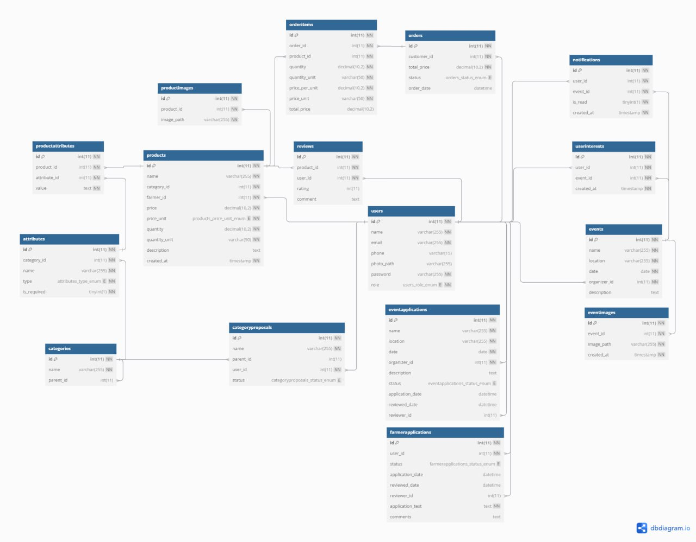

Informační systém pro nabídky ovoce a zeleniny
- Autoři
- Pavel Stepanov (xstepa77@stud.fit.vutbr.cz)
- Gleb Litvinchuk (xlitvi02@stud.fit.vutbr.cz)
- Datum
- 24.11.2024
Obsah
- 1. Úvod
- 1.1 Role uživatelů
- 1.2 Cíl projektu
- 1.3 Hlavní funkce systému
- 2. Architektura systému
- 2.1 Přehled architektury
- 2.2 Diagram architektury
- 2.3 Frontend and Backend
- 2.5 Databáze
- 2.6 Přehled interakcí
- 3. Instalace
- 3.1 Přenos souborů na server
- 3.2 Nastavení přesměrování
- 3.3 Inicializace databáze
- 3.4 Softwarové požadavky
- 3.5 Konfigurace
- 3.6 Testování instalace
URL aplikace
http://www.stud.fit.vutbr.cz/~xstepa77/IIS
1. Úvod
Uživatele systemu pro testovaní
| Login | Heslo | Role |
|---|
| admin@admin.cz | admin | Administrator |
| moderator@moderator.cz | moderator | Moderator |
| farmer@farmer.cz | farmer | Farmař |
| customer@customer.cz | customer | zákazník |
Video
Podívejte se na záznam, který demonstruje funkčnost administrátorského rozhraní:
Video administrátorského rozhraní
Projekt je zaměřen na vytvoření informačního systému pro nabídky ovoce a zeleniny.
Tento systém umožní správu kategorií plodin, jejich atributů, nabídek od farmářů a událostí pro samosběr.
1.1 Cíl projektu
Hlavním cílem projektu je vytvořit funkční webový systém, který umožní farmářům a zákazníkům efektivní správu nabídek a objednávek ovoce a zeleniny.
1.2 Hlavní funkce systému
- Správa kategorií plodin a jejich atributů.
- Umožnění farmářům přidávat nabídky a spravovat dostupnost plodin.
- Podpora zákazníků při hledání, porovnávání a objednávání produktů.
- Správa událostí pro samosběr.
1.3 Role uživatelů
- Administrátor: spravuje uživatele a vytváří moderátory.
- Moderátor: spravuje kategorie a atributy plodin, schvaluje nové návrhy kategorií.
- Registrovaný uživatel (farmář/zákazník): přidává produkty, spravuje objednávky a účastní se událostí.
- Neregistrovaný uživatel: vyhledává produkty, porovnává ceny a zobrazuje nabídky farmářů.
2. Architektura systému
Tento systém je navržen s využitím vícevrstvé architektury, která zahrnuje tři hlavní komponenty: uživatelské rozhraní (frontend), serverovou část (backend) a databázi (database).
2.1 Přehled architektury
Architektura systému je rozdělena do následujících vrstev:
- Frontend: Uživatelské rozhraní poskytuje přístup k systému prostřednictvím webového prohlížeče. Bylo vytvořeno pomocí HTML5, CSS a JavaScriptu.
- Backend: Serverová část implementovaná v jazyce PHP. Zajišťuje zpracování požadavků uživatelů.
- Databáze: Používá relační databázi MySQL pro ukládání všech dat.
2.2 Diagram architektury

2.3 Frontend a Backend
- styles.css: Obsahuje styly pro uživatelské rozhraní, včetně responzivního designu, animací a základních vizuálních prvků.
- script.js: Implementuje dynamické prvky uživatelského rozhraní, jako jsou filtrování, správa modálních oken a aktualizace prvků stránky bez obnovení.
Autentizace a správa uživatelů
- auth.php: Funkce pro autentizaci uživatelů, kontrolu přístupových práv a zpracování přihlášení relací.
- register.php: Formulář pro registraci nových uživatelů s validací údajů.
- register_handler.php: Zpracování dat z registračního formuláře a bezpečné přidání uživatele do databáze.
- login_handler.php: Ověřování přihlašovacích údajů a nastavení relace uživatele.
- logout.php: Ukončení relace uživatele a přesměrování na přihlašovací stránku.
Profil
- profile.php: Stránka uživatelského profilu, která umožňuje editaci osobních údajů a přehled o historii aktivit.
- add_product.php: Formulář pro farmáře na přidání nových produktů s povinným zadáním atributů.
- update_product.php: Funkce pro aktualizaci informací o produktech, jako jsou ceny, množství nebo popis.
- delete_product.php: Bezpečné odstranění produktů včetně přidružených obrázků.
- propose_category.php: Možnost uživatele navrhnout nové kategorie produktů.
- apply_event.php: Formulář pro přihlášení na události a správu účasti.
Správa kategorií, atributů a produktů moderátorem
- manage_categories.php: Stránka pro správu kategorií s možností editace názvů a mazání. Přístupná pouze moderátorům.
- add_category.php: Nástroj pro přidání nových kategorií a jejich hierarchickou správu.
- add_attribute.php: Přidávání atributů k produktům.
- manage_all_attributes.php: Rozhraní pro komplexní správu atributů všech kategorií.
- manage_applications.php: Stránka určená k vyřizování žádostí o status farmáře nebo organizaci událostí.
- manage_attributes.php: Modulární okno pro přidávání a odebírání atributů ve vybrané kategorii.
Stránky s produkty
- index.php: Hlavní stránka systému zobrazující vybrané produkty a obsahující hlavní banner s odkazy na události.
- advanced_search.php: Pokročilé vyhledávání s prefixy a možností filtrace.
Správa košíku a objednávek
- cart.php: Stránka, která zobrazuje obsah košíku a umožňuje jeho úpravu.
- add_to_cart.php: Funkce pro přidání produktů do košíku a kontrolu dostupnosti zboží.
- update_cart.php: Nástroj pro úpravu množství položek v košíku a jejich případné odstranění.
- checkout.php: Proces dokončení objednávky.
- my_orders.php: Zobrazuje minulá objednávky a objednávky čekající na přijetí/odmítnutí farmářem. Po dokončení objednávky je možné zanechat hodnocení.
Produkty
- product.php: Stránka s detailními informacemi o konkrétním produktu.
- get_category_attributes.php: Algoritmus pro zobrazení atributů kategorií, včetně atributů nadřazených kategorií.
Správa událostí
- event.php: Stránka zobrazující podrobné informace o konkrétní události.
- events.php: Přehled všech událostí s možností přidání do seznamu zájmů.
- handle_interests.php: Zpracování interakce uživatelů s produkty, kategoriemi a událostmi.
Řídicí panely
- admin_dashboard.php: Hlavní panel administrátora pro správu uživatelů a přístup k analytickým statistikám systému.
- farmer_dashboard.php: Panel farmáře s přehledem jeho statistik a aktivit.
Pomocné soubory a knihovny
- db.php: Správa připojení k databázi a provádění SQL dotazů s bezpečnostními parametry.
- validation.php: Funkce pro validaci vstupních dat formulářů a jejich kontrolu na konzistenci.
- layout.php: Šablony pro opakující se části uživatelského rozhraní, jako jsou hlavičky a patičky stránek.
2.5 Databáze
Databáze je klíčovým prvkem systému, který spravuje a ukládá veškerá data.
2.6 Přehled interakcí
Proces interakce mezi vrstvami probíhá následovně:
- Uživatel provede akci na frontendu aplikace.
- Požadavek je odeslán na backend server.
- Backend server požadavek zpracuje a vrátí odpověď.
- Frontend uživateli zobrazí odpovídající výsledek.
3. Instalace
Postup instalace a konfigurace aplikace na server:
3.1 Přenos souborů na server
Pro začátek jsem na serveru vytvořil složku WWW/IIS/ v kořenovém adresáři webového serveru. Poté jsem pomocí příkazu
scp -r přenesl všechny zdrojové soubory projektu na server:
scp -r IIS/* xstepa77@stud.fit.vutbr.cz:/home/xstepa77/WWW/IIS/
3.2 Nastavení přesměrování
Aby bylo možné přistupovat k aplikaci na adrese http://www.stud.fit.vutbr.cz/~xstepa77/IIS/, vytvořil jsem přesměrování. Ve složce IIS/ byl vytvořen soubor index.php s následujícím obsahem:
<?php
header("Location: http://www.stud.fit.vutbr.cz/~xstepa77/IIS/frontend/index.php");
exit;
?>
3.3 Inicializace databáze
Pro inicializaci databáze bylo nutné provést import struktury a dat. To lze udělat pomocí nástroje phpMyAdmin nebo příkazového řádku MySQL:
mysql -u xstepa77 -p xstepa77 < green_market.sql
3.4 Softwarové požadavky
- PHP: Verze 7.0 (nebo vyšší).
- MySQL: Verze 5.7 (nebo vyšší).
- Webový server: Apache nebo Nginx.
3.5 Konfigurace
Po přenosu souborů na server je potřeba upravit konfigurační soubor db.php, aby obsahoval správné přihlašovací údaje k databázi:
<?php
$host = 'localhost';
$socket = '/path/to/socket';
$dbname = 'root';
$user = 'root';
$password = 'password';
try {
$pdo = new PDO("mysql:host=$host;dbname=$dbname;unix_socket=$socket;charset=utf8", $user, $password);
$pdo->setAttribute(PDO::ATTR_ERRMODE, PDO::ERRMODE_EXCEPTION);
} catch (PDOException $e) {
echo "Database connection failed: " . $e->getMessage();
die();
}
?>
3.6 Testování instalace
Po úspěšné instalaci by měla být aplikace dostupná na adrese:
http://www.stud.fit.vutbr.cz/~xstepa77/IIS/.